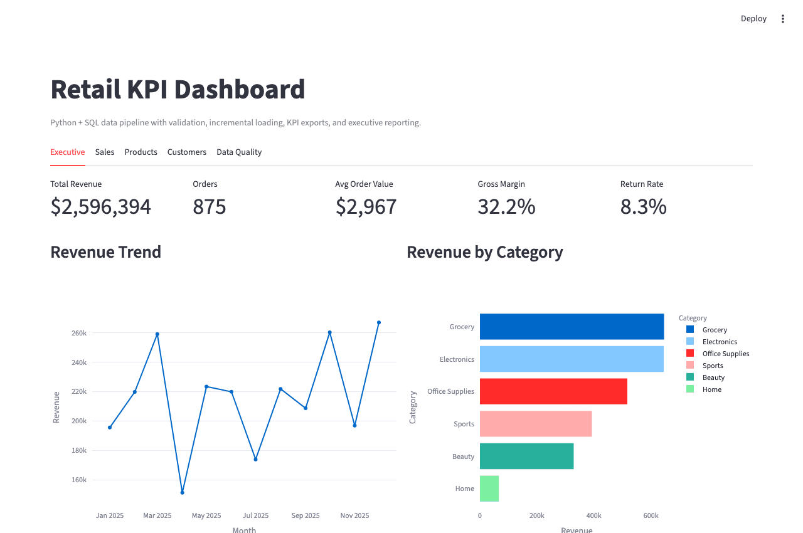

Data Engineering flagship
Retail Data Pipeline and KPI Dashboard
A public work sample for the messy middle of data engineering: raw exports, contracts, rejected rows, trusted tables, model views, dashboard files, diagnosis, lineage, and CI.
YAML contracts
Incremental loads
dbt-style models
Airflow DAG
Quality diagnosis
Lineage map